For SNMP Queries, you won't need to create a data retrieval script. Cacti will use SNMP to retrieve information. But cacti will need additional information on how the indexed data is structured. Think about a table (a MIB table in this case); you'll have to tell cacti about the table structure. This is done by defining an XML file. Basically, you have to define the index to tell cacti about the number of rows and about their unique index. This index is later used to access each rows data. Furthermore, you may define columns, that serve as descriptive fields to be shown in the selection table. The XML file knows them as
<direction>input</direction>
At last, you will have to define those fields, that will be queried for the readings, e.g. ifInOctets, ifOutOctets, ifInErrors, …The XML file knows them as
<direction>output</direction>
Lets have an example: standard Interface MIB with the corresponding part of the <path_cacti>/resources/snmp_queries/interfaces.xml file are displayed using the following table:
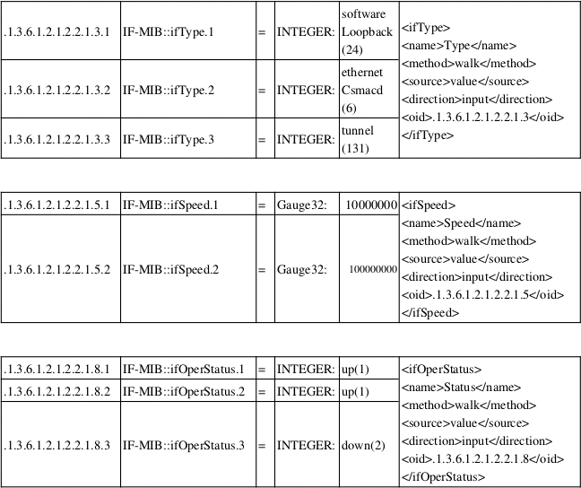

and see the corresponding table structure when defining New Graphs for that Device (my laptop):
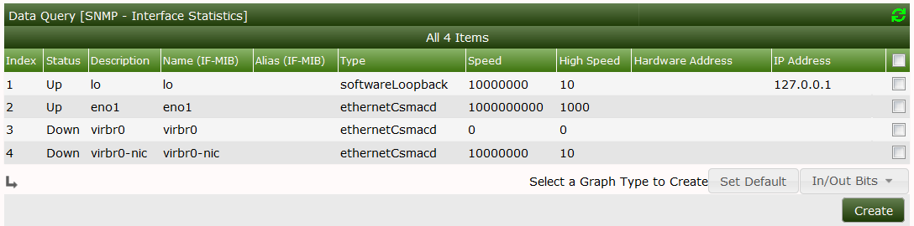
Now you can map
All those are <direction>input</direction> Parameters. They serve as descriptive information to each row to help you identify the proper interface to use. Those parameters of <direction>output</direction> can be compared to output parameters of a script (see ping.pl script above). These are the readings from the device. By selecting the appropriate row (the one grayed out had been selected by me), you tell cacti to retrieve data from the interface defined by this index. But how does cacti know, what output parameters it shall retrieve? See the Select a Graph type dropdown. It specifies a Graph Template defined for this Data Query. The Graph Template in turn references a Data Template which incorporates the needed output parameters as Data Sources. This works quite the same way as defined for a Data Input Method.
To sum up: the SNMP XML file is somehow a replacement for the Data Input Method described above to be used on indexed values. It tells cacti, what data it should retrieve (direction: output). To help you identifying the relevant indexes, the XML defines descriptive parameters (direction: input) to be displayed in the selection table.
A walkthrough for this is given now. It is based on the already supplied interfaces.xml XML file.
Go to Data Queries and click the plus (+) glyph to see:
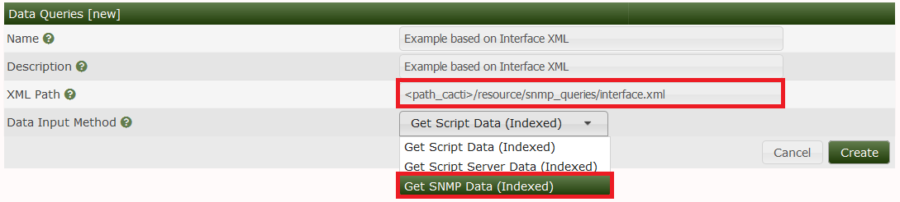
Here, we are using the already existing interface.xml file. Select Get SNMP Data (Indexed) as Data Input Method. Press Create to see:
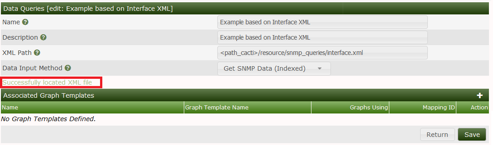
See, that cacti found the XML file. Don't bother with the Associated Graph Templates at the moment. The success message does not include checking of the XML file's content. Not lets proceed to the next definitions.
This is the exact copy of the definitions made above. So I do not repeat everything here. Data Input Method must be selected as Get SNMP Data (Indexed). As this data source is a COUNTER type, select this as the Data Source Type. But after saving the new Data Source definition, you may want to define a second Data Source to the same Data Template. To do so, select New from the Data Source Item heading to see:
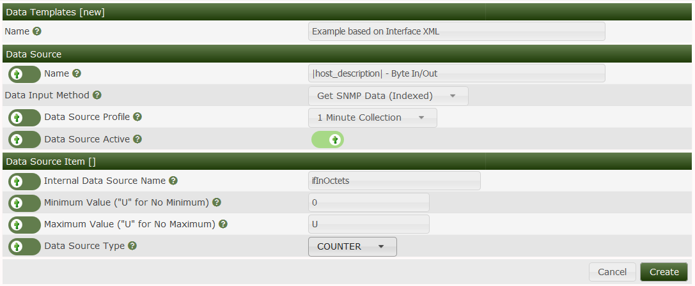
The name of the internal RRDTool Data Source (ifOutOctets) is not replaced in the Tab until you save your work. By default, Maximum Value is set to 100. This is way too low for an interface. All readings above this value will be stored as NaN by RRDTool. To avoid this, set to 0 (no clipping) or to a reasonable value (e.g. interface speed). Don't forget to specify COUNTER! You will have noticed, that the name of the data source does not match the Name in the interface.xml. Don't worry, the solution to this is given later on. Before leaving, pay attention to the bottom of the page:
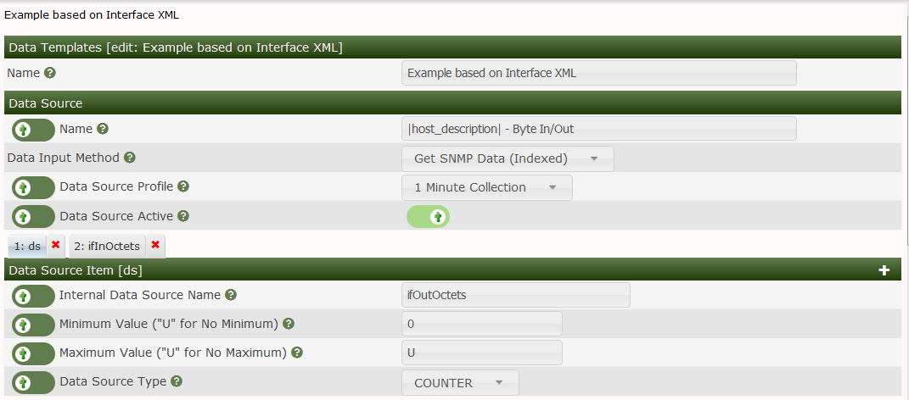
This is specific to indexed Data Queries. You will have to check the last three items to make indexing work. All other items should be left alone, there values will be taken from the appropriate device definitions. Now click Save and you're done with this step.
Note that if you wish to hand Edit mappings of various indexed interfaces manually for each Graph in the future, you should check the following three fields Index Type, Index Value and Output Type ID as shown below. Do this for each Data Template Data Source Items in the Data Template.
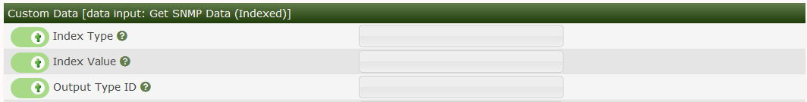
Since creating a new Data Query based upon an existing Data Query called SNMP - Interface Statistics we don't need to create any Graph Templates, we can use the ones created for the other Data Query.
Now it's time to re-visit our Data Query. Remember the Associated Graph Template we've left alone in the very first step? Now it will get a meaning. Go to Data Queries and select our new one. Then press the plus (+) glyph, and select Interface - Traffic (bits/second) from the drop down as shown below. Press Create to initialize the association of this Graph Template with out new Data Query.
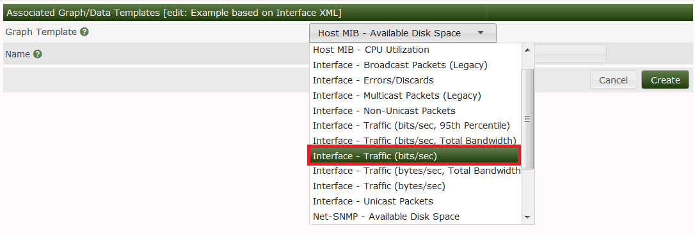
Once we press the Create button, we should get an image like the one below. From here, it's important that we associate the Data Sources to the XML file columns that retrieve the data using SNMP. Press the Save button to complete the mapping of Data Sources to the XML file Data Source Output Values.
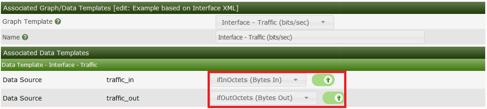
In addition, we need to setup any Suggested Values as you can see from the example below. Suggested Values are optional when the Data Query can have a multitude of suggested names based upon the output from the Data Query. For both the Suggested Values - Graphs and Suggested Values - Data Sources, we must include the name of the column, and the Suggested Value which can includes the special tag |query_xmlcolumn| as shown in the examples below.
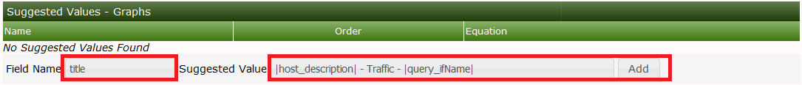
Once the Associated Graph Template mappings have been completed, you should see the image below, where we have:
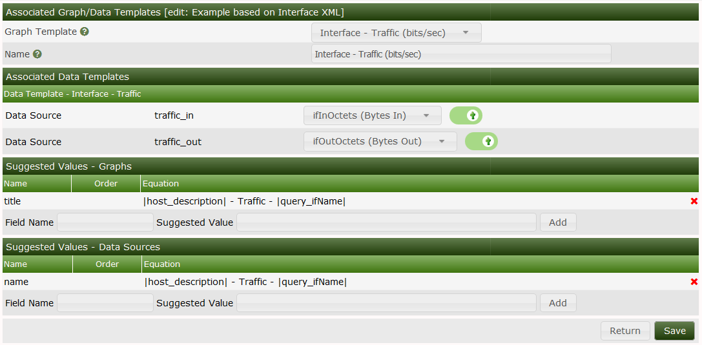
Once you have confirmed all the values, you can press Return to return to the Data Query page for our Example Data Query as shown below.
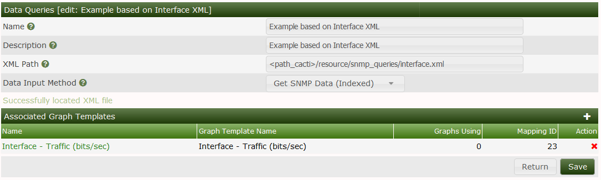
Now go to your Device to add the Associated Data Query:
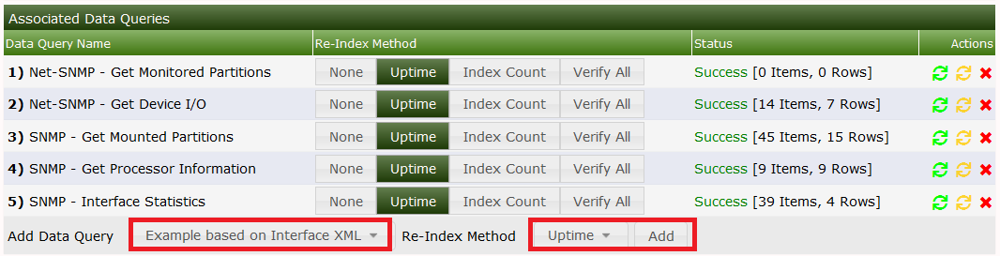
Click Add and then Create Graphs for this Host to see:
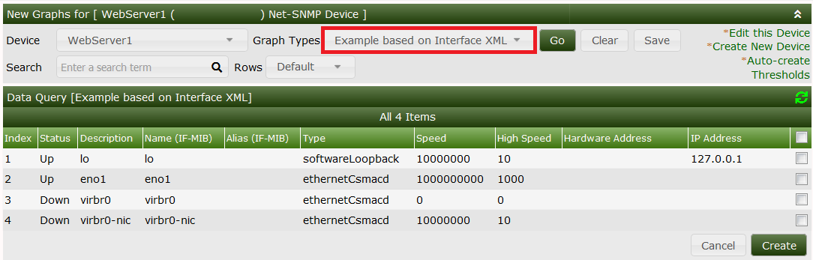
Now select the wanted Interfaces and press Create to generate the Traffic Graph. As long as there's only one Associated Graph Template for that Data Query, there will be no Associated Graph Type drop down. Once you create more than one Associated Graph Template for the Data Query, you will see a drop down just above the Create button showing the available Graph Templates for the Data Query in question, like the SNMP - Interface Statistics as show below.
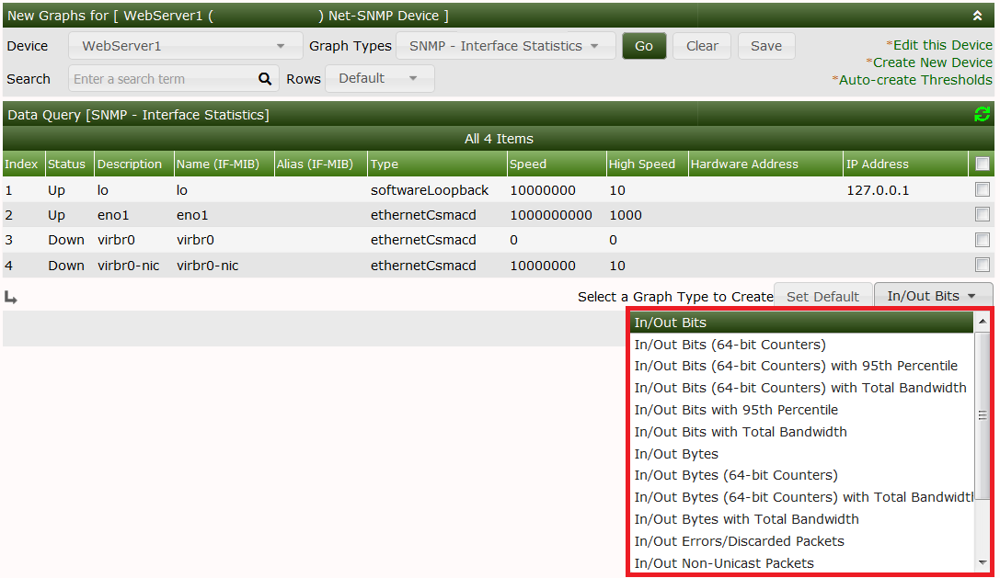
Pressing the Set Default button will set the selected Graph Type to be the default for this Data Query.
Copyright (c) 2004-2019 The Cacti Group